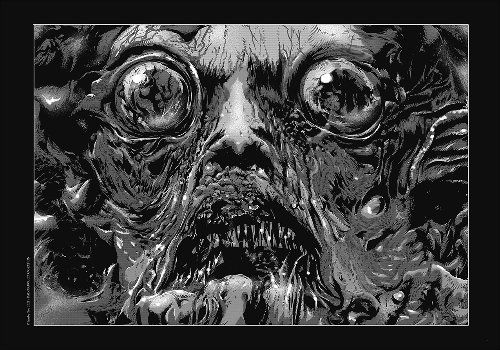

Ressources pour le jeu
Vous trouverez ici une liste de scénario prêt à l'emploi ainsi qu'une fiche de personnage à télécharger
Le Trou du Diable
Un appel au secours, une disparition inquiétante et un mystère qui s'épaissit au fur et a mesure des révélations dans les rues brumeuses d'Aberdeen, en Ecosse. Le trou du diable est un scénario parfait pour l'initiation tout en présentant un challenge pour les joueurs confirmés.
Télécharger le scénarioLe douxième volume
Un scénario moderne et malsain mélant chasse au livres rares et antagonistes déviants. Les enqueteurs évoluent dans un New York hivernal où chaque personne semble cacher quelque chose. Ambiance conspirations et plongé au coeur de la folie
Télécharger le scénarioCelui qui nage avec les cadavres

Enquête et investigations dans les grands espaces! Ce scénario vous propulse dans l'Alaska sauvage des années 1990.
Télécharger le scénarioTranscendance
Grande campagne conspirationiste. Les joueurs controlent des agents gouvernementaux qui mettent à jour un complot d'envergure internationnale. Compter une vingtaine de sessions
Télécharger le scénarioAides de jeu les oripeaux du Roi
Toutes les aides de jeu necessaire pour faire jouer la campagne ds oripeaux du roi. Format doc et jpg
Télécharger les aides de jeu{kind=link}